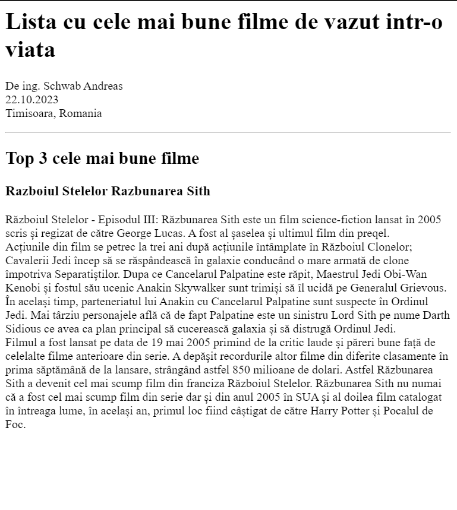

Drumul meu in programare
Realizat de ing. Schwab Andreas
28/10/2023
Timisoara, Timis, Romania
Proiectele mele
Cel mai bune filme de vazut intr-o viata

Invitatie ziua mea de nastere
Despre mine
Contactati-ma